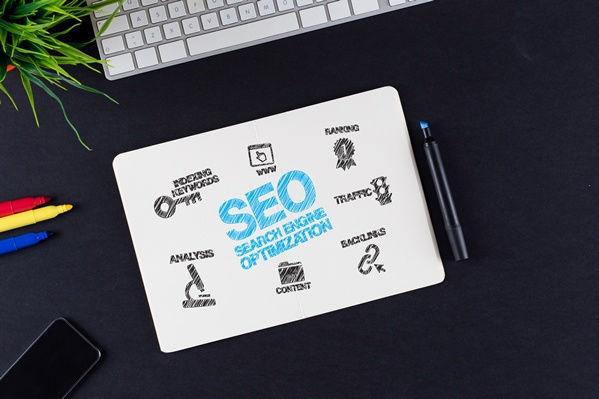

Whether you're writing copy for your website or preparing a new blog post, you should always design your content using SEO best practices. The guidelines recommended here may have little impact individually (remember, Google uses over 200 factors to rank your website), but they do add up quickly. The difference between several positions in search results could be a matter of whether you followed these guidelines. So, let's get started!
Create Great Dedicated Pages
Every page you are trying to optimize should have target keywords, and every keyword you select should have a dedicated page optimized for it. You shouldn't expect your selected keywords to generate traffic unless you have great dedicated pages focusing on the same topics. Remember, search engines don't rank websites, they rank individual web pages. So make sure you have one page per topic that is laser-focused on a particular keyword group.  Don't focus too much on SEO. Focus on the reader. Do your best to create a dedicated page that provides great information on the topic at hand. Invest time in research, and create content that makes your page the most useful on the Web. Then view your page as though you were Google, and scrutinize the details of your page for all the content you want the search engine to see. You can always beef up the content by using examples, industry trends, research studies, quotes from experts, reviews or any other materials that will help support your message.
Don't focus too much on SEO. Focus on the reader. Do your best to create a dedicated page that provides great information on the topic at hand. Invest time in research, and create content that makes your page the most useful on the Web. Then view your page as though you were Google, and scrutinize the details of your page for all the content you want the search engine to see. You can always beef up the content by using examples, industry trends, research studies, quotes from experts, reviews or any other materials that will help support your message. 
Use Header Tags
Header tags (<h1>, <h2>, <h3>, etc.) should be used to mark up and separate the content of your page. The most important one is obviously <h1>. That should be used for all page titles and needs to include your target keyword for the page. Use the keyword only once. For subheadings use <h2> and <h3>. It is also a good idea to include some keywords, but don't overdo it. Your Content Management System (CMS) needs to be equipped with header tags and apply them correctly.  should be used to mark up and separate headings")
Create Effective TITLE Tags
The title tag of your page (<title>) is equally important for search engines and website visitors. It is displayed in your browser's tab, gets saved when bookmarking the page and shows in the search results. Search engines also look at titles to determine the subject of the page, so use the following best practices when creating titles:
1. Place important keywords at the beginning of the title. The search engine will pick them up for rankings and will emphasize (bold) them in search results.
2. Use your brand name in the title. This can increase the likelihood that visitor will recognize your brand.
3. Treat titles as calls to action. Make your titles descriptive and compelling.
4. Keep your titles short. Titles should be no longer than 65-75 characters (approx. 10-15 words). Most search engines will truncate titles any longer than that. Most Content Management Systems create default title tags but will allow you to modify them. Customize titles for all your pages.

Set the Meta Description
Meta tags were originally created to help provide search engines with all kinds of information about the page's content. However, search engines no longer rely on most of them. For example, Meta keywords are no longer valuable or important for SEO. In fact, the presence of Meta keywords on your website tells your competitors the specific keywords you are pursuing. While most content management systems give control for customizing Meta tags, only the Meta description still matters today. While they are not as important in search engine rankings, they are instrumental in encouraging users to click on your link from the SERP (search engine results page). Your page's description is displayed below the title of your page and just as with title tags, search engines highlight keywords the users keyed in to their searches. For best results write compelling Meta descriptions using the same principles as titles, keep them between 150 and 160 characters in length and use keywords. Also, avoid using duplicate Meta tags. 
Use Image ALT Attributes
You may be shopping for a new iPhone and find a great picture of a stylish iPhone with a complementary carbon fiber case. That's what you see on a picture, but search engines don't perceive images the same way a shopper does. They rely on ALT attributes that describe images. By using an ALT attribute "iPhone with a complementary carbon fiber case", you are essentially describing the image to search engines. Image ALT attributes are a good place for your keywords. Make them descriptive, thorough and accurate. This not only helps with the consumer’s web search, but it enables your images to be searchable in image search, which can produce a great deal of traffic. For this reason, you should always use ALT attributes for important images on your website. 
Create Human-Friendly URLs
URLs (or web addresses) of your pages are important and show up in several places: on search results pages between the title and the description, in the browser URL bar and when someone is referencing a page on your website (in an e-mail for example). It is a good practice to maintain clean and descriptive URLs that give the user a good understanding of the page without actually visiting the page. A clean URL also implies the structure of your website. The best URLs are those that allow users to predict the content (for example, http://www.intechnic.com/web-development/).  Keep URLs short. Shorter is more convenient in that it’s easier to share URLs (text messages, e-mail, Twitter, etc.). It is also a good idea to include keywords in URLs, but don't overdo it. This could trigger spam filters. Finally, if you have multiple words that need to be separated, use hyphens (-) and stay away from underscore "_" and other characters. Most CMS create URLs for new pages automatically but do allow modification to custom URLs. This is sometimes an advanced feature, so talk to you web developer to learn the latitude you will have.
Keep URLs short. Shorter is more convenient in that it’s easier to share URLs (text messages, e-mail, Twitter, etc.). It is also a good idea to include keywords in URLs, but don't overdo it. This could trigger spam filters. Finally, if you have multiple words that need to be separated, use hyphens (-) and stay away from underscore "_" and other characters. Most CMS create URLs for new pages automatically but do allow modification to custom URLs. This is sometimes an advanced feature, so talk to you web developer to learn the latitude you will have. 
Set Internal Links
This tactic is designed to boost rankings of certain pages by passing credibility to them from other pages (note, this tactic doesn't add credibility, it just transfers it). This works by linking related pages using contextual links (i.e., referencing a "target" page from a "donor" page within the body of an article). You can do this in four easy steps:
- Determine Donor Pages
The key to this tactic is to find pages from which you want to link and to which you want to link. Pages from which you want to link (donor pages) are the pages that are linked most often from other websites.
- Determine Target Pages
The next step is to find pages to which you want to link (target pages). The pages that need most link credibility are the ones which are "almost ranking" on the first page in search results and need an extra "boost" to get to the first page.
- Create Links
Now you are ready to link the pages, you must create links within the text of the page using keywords that best describe the subject of the page to which you are linking. Remember, you are linking in order to pass link credibility. In this example, the link for "link credibility" was used contextually. It is focusing on the target keyword and should be set to another page on your website containing this subject. If you are linking from more than one donor page, use different keywords and mix it up.
- Don't Overdo Links
Use internal linking sparingly, and don't overdo it. You shouldn't have more than 5-6 internal links per page (navigation doesn't count). Also, broken links (internal and external) are bad for SEO so you should regularly examine your website meticulously for broken links and fix them. 
Vary Anchor Text in Links
Links to your website as well as internal links are great for SEO because they transfer link popularity. What also makes a difference is the anchor text of the link. Anchor text is the visible text inside the link that describes the linked content. For example, the anchor text, Easy Tips to Optimize Your Content for SEO, clearly describes the content of the linked page. That's exactly how search engines look at it, so use descriptive anchor text and include your target keywords instead of using "click here" or "read more." It is good to have links that include keywords, but, again, don't overdo it. Having too many links with the same keywords will look spammy and may be considered "unnatural." Instead, use variations and sometimes omit keywords entirely. 
Turn Old Content into Link Magnets
Most marketers focus their SEO efforts on the latest blog post. They promote content on social media for a couple days and then move on to the content topic. The problem with this strategy is that it may take longer than a couple days or a couple social shares to get the traction you need. SEO is the process that takes time, work, experimentation and measurement, so by abandoning SEO efforts on old posts, you are preventing them from realizing their true potential. So how do you make the most from your older posts? Create link magnets. Link magnets involve creating content that is designed to encourage others to link to it from other websites. This sounds good in theory, but how do you get others to do it? You can achieve this in five steps:
1. First, identify the posts with the most SEO potential.
These posts are close to the first page of SERP for good keywords. Use the same approach recommended for creating internal links.
2. Check all of the SEO principles outlined here and conduct additional optimization as needed.
Remember, the difference between ranking on the first and second page may be a detail as small as missing an <h1> (header) tag or insufficient keywords in the body of the text.
3. Link to the post from other older, high-ranking posts.
This way, you can pass some link juice for your high-performing posts to other posts with potential.
4. Look for ways to improve the content of your post.
If you think you have a great topic, selected perfect keywords and followed all the practices described here, but somehow you are still not getting enough traction, perhaps the content is good, but not great. Look for ways to improve it: add illustrations, graphs, evidence, screenshots, examples, statistics, quotes, etc.
5. After you have followed all these steps, it is time to give your post a new life.
Run another promotion campaign with higher intensity: re-share it across social media, include it in your mailing, add the link to it in your e-mail signature block, run a paid ad campaign on Facebook, LinkedIn and Twitter, reach out to other bloggers to see if they would like to reference your content. 
Review Technical SEO
When search engines can't index your website, they can’t show it in search results. There are a few technical aspects can assist or prevent indexing of your website by search engines. Here are some items you should review with your web developer to ensure your website is optimized from a technical standpoint.
1. Google Search Console
Between you, your web developer and your SEO partner, you should set up an account for your website in Google Search Console. It is a free service that will help you understand how Google sees the website and if there are any problems or recommendations.
2. Sitemap
Your website should have a sitemap in the XMP format that includes the entire structure of your website (including your blog posts) that should then be submitted to Google using Search Console. This will help Google index your website and inform it of updates.
3. Permanent Redirects
If the URL structure of your website is changing (for example, when redoing the website), you should set up permanent redirects (code 301) from your old pages to the new pages. That's how search engines (as well as users) will be redirected to new versions of the old pages.
4. Nofollow / Noindex
Make sure that your website's pages are "open" to indexing by search engines. There is one tag in particular that will stop search engines in their tracks: <meta name="robots" content="noindex, nofollow">. Be sure you don't have it set if you want your website indexed.
5. Robots.txt
Robots.txt is a file on your web server that can restrict access to your website for search engines. It works the same way as "noindex, nofollow" tags, so be sure that it does not prevent search engines from indexing your website.
6. Forms/Passwords
Search engines cannot complete forms, so if any content behind a form has to be completed in order to access it, search engines won't be able to reach it. The same applies to password-protected content.
Looking for more great SEO strategies? Check out our free eBook below: